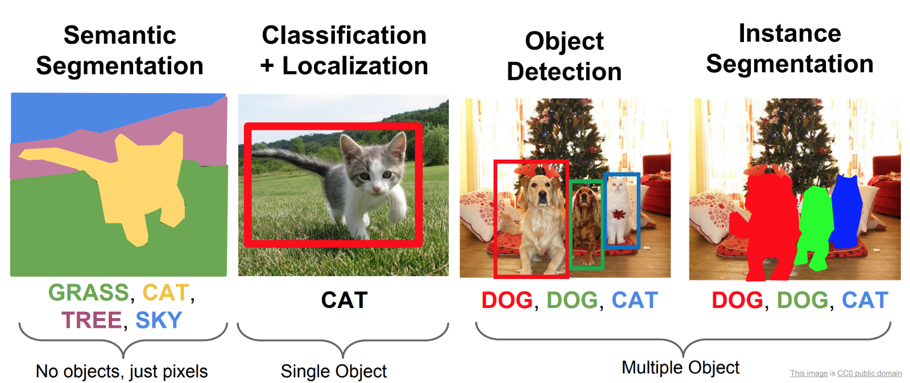
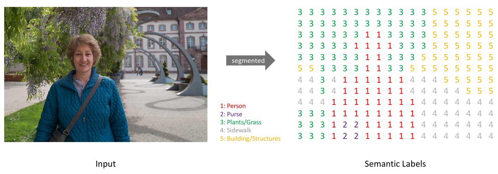
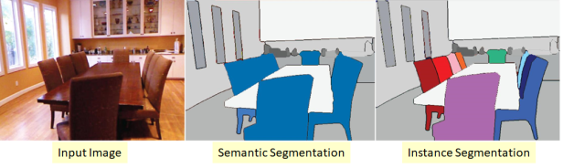

딥러닝이 이미지를 처리하는 방법
1. Classification
2. Detection
둘은 어떻게 다를까?
Classification (분류):
목표: 이미지를 사전 정의된 클래스 레이블 중 하나로 할당하는 것.
접근 방식: 이미지의 전체적인 내용을 이해하고, 이미지에 포함된 개체 또는 속성을 식별하여 해당하는 클래스로 분류하는 것.
예시: 고양이, 개, 자동차, 비행기 등과 같은 카테고리로 이미지를 분류하는 작업.
Detection (탐지):
목표: 이미지 내에 존재하는 개별 객체의 위치와 클래스를 탐지하는 것.
접근 방식: 이미지에서 객체의 위치를 찾아내고, 해당 객체의 클래스를 식별. 이를 위해 이미지에서 객체의 경계 상자(bounding box)를 그리고, 객체가 속하는 클래스 레이블을 할당.
예시: 이미지에서 사람, 자전거, 차량 등의 객체를 탐지하고, 객체의 위치와 클래스를 식별하는 작업.
Detetcion에도 종류가 있다



Detection을 공부해보자
딥러닝을 통한 Image Segmentation 입문!!Keras를 사용해 딥러닝으로 이미지를 분석해보자! A Beginner's guide to Deep Learning based Semantic Segmentation using Keras 원문 링크 : https://divamgupta.com/image-segmentation/2019/06/06/deep-learning-semantic-segmentation-keras.htmldevkor.tistory.comhttps://www.youtube.com/watch?v=jqNCdjOB15s
이제 Competition에 참여해보자
https://dacon.io/competitions/official/236107/overview/description
합성데이터 기반 객체 탐지 AI 경진대회 - DACON분석시각화 대회 코드 공유 게시물은 내용 확인 후 좋아요(투표) 가능합니다.dacon.ioCode
import zipfile
fantasy_zip = zipfile.ZipFile('{zip 파일 위치}')
fantasy_zip.extractall('/content/data')
fantasy_zip.close()
# Memory size 문제로 10개 data로만 train
import os
import shutil
train_list = os.listdir('/content/data/train')
train_list.sort()
real_train_list = train_list[:10]
print(real_train_list)
for e in real_train_list:
shutil.move(f'/content/data/train/{e}', f'/content/data/real_train/{e}')
# Import
import warnings
warnings.filterwarnings(action='ignore')
import random
import pandas as pd
import numpy as np
import os
import glob
import cv2
import matplotlib.pyplot as plt
import torch
import torch.nn as nn
import torchvision
import torchvision.models as models
from torchvision.models.detection.faster_rcnn import FastRCNNPredictor, FasterRCNN
from torchvision.models.detection.rpn import AnchorGenerator
from torchvision.models.detection.backbone_utils import resnet_fpn_backbone
import torch.optim as optim
import torch.nn.functional as F
from torch.utils.data import Dataset, DataLoader
import cv2
import albumentations as A
from albumentations.pytorch.transforms import ToTensorV2
from tqdm.auto import tqdm
device = torch.device('cuda') if torch.cuda.is_available() else torch.device('cpu')
# Hyperparameter Setting
CFG = {
'NUM_CLASS':34,
'IMG_SIZE':512,
'EPOCHS':10,
'LR':3e-4,
'BATCH_SIZE':32,
'SEED':41
}
# Fixed Random-Seed
def seed_everything(seed):
random.seed(seed)
os.environ['PYTHONHASHSEED'] = str(seed)
np.random.seed(seed)
torch.manual_seed(seed)
torch.cuda.manual_seed(seed)
torch.backends.cudnn.deterministic = True
torch.backends.cudnn.benchmark = True
seed_everything(CFG['SEED']) # Seed 고정
# Visualization
def draw_boxes_on_image(image_path, annotation_path):
# 이미지 불러오기
image = cv2.imread(image_path)
image = cv2.cvtColor(image, cv2.COLOR_BGR2RGB)
# txt 파일에서 Class ID와 Bounding Box 정보 읽기
with open(annotation_path, 'r') as file:
lines = file.readlines()
for line in lines:
values = list(map(float, line.strip().split(' ')))
class_id = int(values[0])
x_min, y_min = int(round(values[1])), int(round(values[2]))
x_max, y_max = int(round(max(values[3], values[5], values[7]))), int(round(max(values[4], values[6], values[8])))
# 이미지에 바운딩 박스 그리기
cv2.rectangle(image, (x_min, y_min), (x_max, y_max), (255, 0, 0), 2)
cv2.putText(image, str(class_id), (x_min, y_min - 5), cv2.FONT_HERSHEY_SIMPLEX, 0.5, (255, 0, 0), 2)
# 이미지와 바운딩 박스 출력
plt.figure(figsize=(25, 25))
plt.imshow(image)
plt.show()
# 파일 경로 설정
image_file = '/content/data/train/syn_00001.png'
annotation_file = '/content/data/train/syn_00001.txt'
# 함수 실행
draw_boxes_on_image(image_file, annotation_file)
# Custom Dataset
def collate_fn(batch):
images, targets_boxes, targets_labels = tuple(zip(*batch))
images = torch.stack(images, 0)
targets = []
for i in range(len(targets_boxes)):
target = {
"boxes": targets_boxes[i],
"labels": targets_labels[i]
}
targets.append(target)
return images, targets
class CustomDataset(Dataset):
def __init__(self, root, train=True, transforms=None):
self.root = root
self.train = train
self.transforms = transforms
self.imgs = sorted(glob.glob(root+'/*.png'))
if train:
self.boxes = sorted(glob.glob(root+'/*.txt'))
def parse_boxes(self, box_path):
with open(box_path, 'r') as file:
lines = file.readlines()
boxes = []
labels = []
for line in lines:
values = list(map(float, line.strip().split(' ')))
class_id = int(values[0])
x_min, y_min = int(round(values[1])), int(round(values[2]))
x_max, y_max = int(round(max(values[3], values[5], values[7]))), int(round(max(values[4], values[6], values[8])))
boxes.append([x_min, y_min, x_max, y_max])
labels.append(class_id)
return torch.tensor(boxes, dtype=torch.float32), torch.tensor(labels, dtype=torch.int64)
def __getitem__(self, idx):
img_path = self.imgs[idx]
img = cv2.imread(self.imgs[idx])
img = cv2.cvtColor(img, cv2.COLOR_BGR2RGB).astype(np.float32)
img /= 255.0
height, width = img.shape[0], img.shape[1]
if self.train:
box_path = self.boxes[idx]
boxes, labels = self.parse_boxes(box_path)
labels += 1 # Background = 0
if self.transforms is not None:
transformed = self.transforms(image=img, bboxes=boxes, labels=labels)
img, boxes, labels = transformed["image"], transformed["bboxes"], transformed["labels"]
return img, torch.tensor(boxes, dtype=torch.float32), torch.tensor(labels, dtype=torch.int64)
else:
if self.transforms is not None:
transformed = self.transforms(image=img)
img = transformed["image"]
file_name = img_path.split('/')[-1]
return file_name, img, width, height
def __len__(self):
return len(self.imgs)
def get_train_transforms():
return A.Compose([
A.Resize(CFG['IMG_SIZE'], CFG['IMG_SIZE']),
ToTensorV2(),
], bbox_params=A.BboxParams(format='pascal_voc', label_fields=['labels']))
def get_test_transforms():
return A.Compose([
A.Resize(CFG['IMG_SIZE'], CFG['IMG_SIZE']),
ToTensorV2(),
])
train_dataset = CustomDataset('/content/data/train', train=True, transforms=get_train_transforms())
test_dataset = CustomDataset('/content/data/test', train=False, transforms=get_test_transforms())
# DataLoader 생성
train_loader = DataLoader(train_dataset, batch_size=CFG['BATCH_SIZE'], shuffle=True, collate_fn=collate_fn)
test_loader = DataLoader(test_dataset, batch_size=CFG['BATCH_SIZE'], shuffle=False)
# Define Model
def build_model(num_classes=CFG['NUM_CLASS']+1):
model = torchvision.models.detection.fasterrcnn_resnet50_fpn(pretrained=True)
in_features = model.roi_heads.box_predictor.cls_score.in_features
model.roi_heads.box_predictor = torchvision.models.detection.faster_rcnn.FastRCNNPredictor(in_features, num_classes)
return model
# Train & Validation
def train(model, train_loader, optimizer, scheduler, device):
model.to(device)
best_loss = 9999999
best_model = None
for epoch in range(1, CFG['EPOCHS']+1):
model.train()
train_loss = []
for images, targets in tqdm(iter(train_loader)):
images = [img.to(device) for img in images]
targets = [{k: v.to(device) for k, v in t.items()} for t in targets]
optimizer.zero_grad()
loss_dict = model(images, targets)
losses = sum(loss for loss in loss_dict.values())
losses.backward()
optimizer.step()
train_loss.append(losses.item())
if scheduler is not None:
scheduler.step()
tr_loss = np.mean(train_loss)
print(f'Epoch [{epoch}] Train loss : [{tr_loss:.5f}]\n')
if best_loss > tr_loss:
best_loss = tr_loss
best_model = model
return best_model
model = build_model()
optimizer = torch.optim.Adam(model.parameters(), lr=CFG['LR'])
scheduler = torch.optim.lr_scheduler.StepLR(optimizer, step_size=5, gamma=0.5)
infer_model = train(model, train_loader, optimizer, scheduler, device)
# Inference & Submission
def box_denormalize(x1, y1, x2, y2, width, height):
x1 = (x1 / CFG['IMG_SIZE']) * width
y1 = (y1 / CFG['IMG_SIZE']) * height
x2 = (x2 / CFG['IMG_SIZE']) * width
y2 = (y2 / CFG['IMG_SIZE']) * height
return x1.item(), y1.item(), x2.item(), y2.item()
def inference(model, test_loader, device):
model.eval()
model.to(device)
results = pd.read_csv('/content/data/sample_submission.csv')
for img_files, images, img_width, img_height in tqdm(iter(test_loader)):
images = [img.to(device) for img in images]
with torch.no_grad():
outputs = model(images)
for idx, output in enumerate(outputs):
boxes = output["boxes"].cpu().numpy()
labels = output["labels"].cpu().numpy()
scores = output["scores"].cpu().numpy()
for box, label, score in zip(boxes, labels, scores):
x1, y1, x2, y2 = box
x1, y1, x2, y2 = box_denormalize(x1, y1, x2, y2, img_width[idx], img_height[idx])
results = results.append({
"file_name": img_files[idx],
"class_id": label-1,
"confidence": score,
"point1_x": x1, "point1_y": y1,
"point2_x": x2, "point2_y": y1,
"point3_x": x2, "point3_y": y2,
"point4_x": x1, "point4_y": y2
}, ignore_index=True)
# 결과를 CSV 파일로 저장
results.to_csv('/content/baseline_submit.csv', index=False)
print('Done.')
inference(infer_model, test_loader, device)